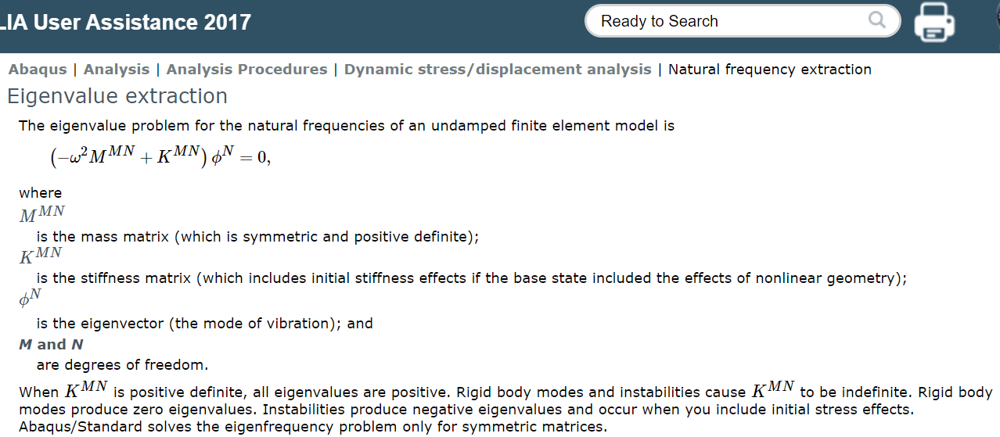
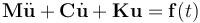

目录
Abaqus模态稳态分析原理
总括
基于模态的谐响应分析, 可以通过扫频的方式求解频率范围内结构的线性稳态响应情况。阻尼是和频率相关的, 但模态叠加法只需要知道n个模态阻尼即可推广到其他频率范围(原因详见文内公式)。
1. 谐响应分析的目的
用来求解结构在连续谐波激励下的线性响应.求解稳态动力学响应有三种方法: subspace, direct, modal。base modal的方法是利用前一个分析步提取出来的一系列模态特征计算稳态解。
2. ABAQUS的求解原理
2.1 特征值提取
对于一个具有N个自由度的多自由度系统, 可用N个独立的广义坐标描述系统的运动状态:
a^{N\times1}=\{a_1, a_2, a_3, ..., a_N\}^{T}对于N自由度的系统, 一定可以找到N个固有频率 w_{\alpha} 以及相对应的振型 \phi_{\alpha}^{N\times1} , \alpha=1...n , n是提取的模态的数目。\phi^{N} 左边的矩阵是 M\times N 的, 等号右边是0, 所以 \phi^{N} 是 N\times 1 的。
所谓振型按我的理解就是共振时, 结构的一个形状。用数学方式表示就是一个特定的解向量 \phi_{\alpha}^{N}
将 \phi_{\alpha}^{N\times 1} 组装成 Nxn 矩阵 \Phi , 其中每一列都包含一个特征模态。

2.2 模态叠加
有阻尼的结构动力学方程:

模态叠加用矩阵形式写为
u^{N\times1}=\Phi^{N\times n} q^{n\times 1}列矢量 q ——模态自由度(待求)
在运动方程中插入模态叠加表达式, 代入动力学方程:
M\Phi \ddot{q}+C\Phi \dot{q}+K\Phi q=f(t)^{N \times1}左乘 \Phi^{T} 后得到:
\Phi^{T}M\Phi \ddot{q}+\Phi^{T}C\Phi \dot{q}+\Phi^{T}K\Phi q=\Phi^{T}f(t)^{N\times 1}此时, 原方程组现已从求解 N 个变量简化为 n 个变量, 右侧 \Phi^{T}f(t)^{N\times 1} 为模态载荷, 是外载荷在每个特征模态上的投影。
\Phi^{N\times n}=[\phi_1, \phi_2, \phi_3, ..., \phi_n]\Phi^{T}=[\phi_1^T, \phi_2^T, \phi_3^T, ..., \phi_n^T]f(t)^{N\times 1}=
\begin{bmatrix}
f(t)_1 \\
f(t)_2 \\
f(t)_3 \\
....\\
f(t)_N
\end{bmatrix}\Phi^{T}f(t)^{N\times 1} =
\begin{bmatrix}
\phi_1f(t)_1\\
\phi_2f(t)_2\\
\phi_3f(t)_3\\
...\\
\phi_nf(t)_n\\
\end{bmatrix}上式经过一系列变换后, 可以得到投影到mode- \alpha 上的方程(1):
\ddot{q}_{\alpha}+c_{\alpha}\dot{q}_{\alpha}+\omega_{\alpha}^2q_{\alpha}=\frac{1}{m_{\alpha}}(f_{1\alpha}+if_{2\alpha})exp(i\Omega t)其中:
- q_{\alpha} : mode \ \alpha 下的广义坐标幅值
- c_{\alpha} : 与mode \ \alpha 有关的阻尼(模态阻尼)`
- \omega_{\alpha} : mode \ \alpha 下的无阻尼固有频率
- m_{\alpha}: 广义质量, m_{\alpha}=\Phi_{\alpha}^{N}M^{N\times M}\Phi_{\alpha}^{M} \ \ (no \ sum\ over\ \alpha)
- (f_{1\alpha}+if_{2\alpha})e^{i\Omega t} :是和 mode\ \alpha 有关的激励
2.2.1 激励项
激励被 frequency (\Omega) , 节点等效力实、虚部 (F_{1}^{N}, F_{2}^N) 定义。投影到 mode\ \alpha 上:
f_{1\alpha}+if_{2\alpha}=\phi_{\alpha}^N(F_{1}^{N}+iF_{2}^N)\\
N——模型自由度数载荷向量是根据其实部 F_{1}^{N} 和虚部 F_{2}^{N} 编写的, 这是Abaqus/Standard 中定义载荷的方式.如果偶用幅值 F_{0}^N 和相位 \Phi 表示, 则有
F^N=F_1^N+iF_2^N=F_{0}^{N}exp[i(\Omega t+\Phi)]其中:
F_1^N=F_0^Ncos(\Phi) \ \ \ \\ F_2^N=F_0^Nsin(\Phi)2.2.2 阻尼项
- 直接模态阻尼: c_\alpha=2\zeta_{\alpha}\omega_{\alpha}
其中: \zeta_{\alpha}是mode \ \alpha下的临界阻尼分(模态阻尼比)
- Structure Damp: 提供了与模态振幅成比例的阻尼力。
c_{\alpha}\dot{q}_{\alpha}=i s_{\alpha}\omega_{\alpha}^2 q_{\alpha}
其中: s_{\alpha}是mode \ \alpha 的结构阻尼系数(模态损耗因子)
- 瑞利阻尼: 定义为 c_{\alpha}=\beta_{\alpha}+\gamma_{\alpha}\omega_{\alpha}^2
其中, \beta_{\alpha}、\gamma_{\alpha} 是瑞利阻尼系数, 具体求法见Document.
瑞利阻尼系数可以用来再现:
\zeta_{\alpha}=\frac{\beta_{\alpha}}{2\omega_{\alpha}}+\frac{\gamma_{\alpha}\omega_{\alpha}}{2}将阻尼项代入方程(1):
\ddot{q}_{\alpha}+2\zeta_{\alpha}\omega_{\alpha}\dot{q}_{\alpha}+(\beta_{\alpha}+\gamma_{\alpha}\omega_{\alpha}^2)\dot{q}_{\alpha}+i s_{\alpha}\omega_{\alpha}^2 \dot{q}_{\alpha}+\omega_{\alpha}^2q_{\alpha}=\frac{1}{m_{\alpha}}(f_{1\alpha}+if_{2\alpha})exp(i\Omega t)方程的解为:
\dot{q}_{\alpha}=H_{0\alpha}*f_{0 \alpha}* exp(i(\Omega t+\Phi_{\alpha}))方程中有三个阻尼项对应于, ABAQUS/CAE中只定义一个, 其他的就是0.
其中:
f_{0\alpha}=\sqrt{f_{1\alpha}^2+f_{2\alpha}^2}是投影载荷矢量的振幅H_{0\alpha}(\Omega)是mode\ \alpha下系统复传递函数的振幅Re(H_{0\alpha}f_{0\alpha})=\frac{1}{m_{\alpha}} (\frac{f_{1\alpha}(\omega_{\alpha}^2-\Omega^2)}{(\omega_{\alpha}^2-\Omega^2)^2+(\eta_{\alpha}\Omega)^2}+\frac{f_{2\alpha}\eta_{\alpha}\Omega}{(\omega_{\alpha}^2-\Omega^2)^2+(\eta_{\alpha}\Omega)^2})Im(H_{0\alpha}f_{0\alpha})=\frac{1}{m_{\alpha}}
(-\frac{f_{1\alpha}\eta_{\alpha}\Omega}{(\omega_{\alpha}^2-\Omega^2)^2+(\eta_{\alpha}\Omega)^2}+\frac{f_{2\alpha}(\omega_{\alpha}^2-\Omega^2)}{(\omega_{\alpha}^2-\Omega^2)^2+(\eta_{\alpha}\Omega)^2})其中:
\eta_{\alpha}=2\zeta_{\alpha}\omega_{\alpha}+\beta_{\alpha}+\gamma_{\alpha}\omega_{\alpha}^2+\frac{s_{\alpha}\omega_{\alpha}^2}{\Omega}响应的幅值为:
H_{0\alpha}f_{0\alpha}=\sqrt{Re(H_{\alpha})^2+Im(H_{\alpha})^2}=\frac{1}{m_{\alpha}}\frac{1}{\sqrt{(\omega_{\alpha}^2-\Omega^2)^2+(\eta_{\alpha}\Omega)^2}}f_{0\alpha}响应的相位:
\Psi_{\alpha}=acrtan(Im(H_{\alpha})/Re(H_{\alpha}))如果谐波激励以base motion的形式施加, 那么模态载荷如下:
f_{1\alpha}=-\frac{1}{m\alpha} \phi_{\alpha}^{N}M^{NM}\hat{e}_j^{M}a_{1j}exp(i\Omega t)\\
f_{2\alpha}=-\frac{1}{m\alpha} \phi_{\alpha}^{N}M^{NM}\hat{e}_j^{M}a_{2j}exp(i\Omega t)其中, M^{NM} 是结构的质量矩阵, \hat{e}_{j}^{M}是一个vector(在任何接地节点上的基础加速度, 方向上具有单位幅值, 否则为零)
a_{1j}、a_{2j} 是base acceleration的实部和虚部。如果施加的是velocity(或者displacement) 则 a_1=-\Omega v_1\ \ \ a_2=-\Omega v_2 或( a_1=-\Omega^2 u_1 \ \ \ a_2=-\Omega^2 u_2 )。
综上所述, 根据模态叠加的基本假设: 位移写为特征模态的线性组合。
方程(1)的解 q_{\alpha} 为
q_{\alpha}=H_{0\alpha}f_{0\alpha}exp[i(\Omega t+\Phi_{\alpha})]这是外加激励频率为 \Omega , 在 mode\ \alpha 下的解, 经过模态叠加(如下)后可以得到位移响应(式2):
u^N=\sum_{\alpha}^{n}{\phi_{\alpha}^N q_{\alpha}}其中:
- q_{\alpha}:每个模态的幅值求解结果
- \phi_{\alpha}^N:mode\ \alpha的特征向量向量(N \times1)即振型向量
稳态响应以通过用户指定频率范围的频率扫描形式给出。依次扫描频率点, 就可以求出结构的频域响应
参考资料